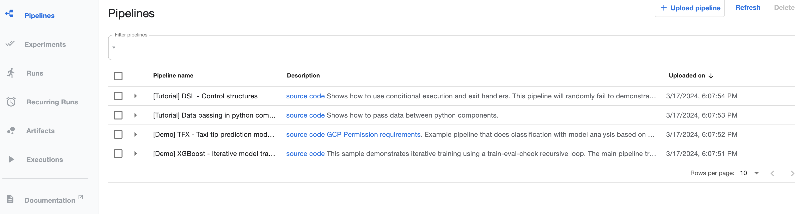

Simplest Transform pipeline tutorial
In this example, we implement a pipeline to automate execution of the simple noop transform
In this tutorial, we will show the following:
- How to write the
nooptransform automation pipeline, leveraging KFP components. - How to compile a pipeline and deploy it to KFP
- How to execute pipeline and view execution results
Note: the project and the explanation below are based on KFPv1
üìù Table of Contents
- Implementing pipeline
- Imports definition
- Components definition
- Input parameters definition
- Pipeline definition
- Additional configuration
- Tolerations and node selector
- Compiling a pipeline
- Deploying a pipeline
- Executing pipeline and watching execution results
- Clean up the cluster
Implementing pipeline
Overall implementation roughly contains 5 major sections:
- Imports
- Components definition - definition of the main steps of our pipeline
- Input parameters definition
- Pipeline wiring - definition of the sequence of invocation (with parameter passing) of participating components
- Additional configuration
Imports definition
import kfp.compiler as compiler
import kfp.components as comp
import kfp.dsl as dsl
from kfp_support.workflow_support.runtime_utils import (
ONE_HOUR_SEC,
ONE_WEEK_SEC,
ComponentUtils,
)
from kubernetes import client as k8s_client
Components definition
Our pipeline includes 4 steps - compute execution parameters, create Ray cluster, submit and watch Ray job, clean up Ray cluster. For each step we have to define a component that will execute them:
# components
base_kfp_image = "quay.io/dataprep1/data-prep-kit/kfp-data-processing:0.0.2"
# compute execution parameters. Here different transforms might need different implementations. As
# a result, instead of creating a component we are creating it in place here.
compute_exec_params_op = comp.func_to_container_op(
func=ComponentUtils.default_compute_execution_params, base_image=base_kfp_image
)
# create Ray cluster
create_ray_op = comp.load_component_from_file("../../../kfp_ray_components/createRayComponent.yaml")
# execute job
execute_ray_jobs_op = comp.load_component_from_file("../../../kfp_ray_components/executeRayJobComponent.yaml")
# clean up Ray
cleanup_ray_op = comp.load_component_from_file("../../../kfp_ray_components/cleanupRayComponent.yaml")
# Task name is part of the pipeline name, the ray cluster name and the job name in DMF.
TASK_NAME: str = "noop"
create_ray_op,
execute_ray_jobs_op and cleanup_ray_op, while compute_exec_params_op component is built inline, because it might
differ significantly. For "simple" pipeline cases we can use the
default implementation,
while, for example for exact dedup, we are using a very specialized one.
Input parameters definition
The input parameters section defines all the parameters required for the pipeline execution:
# Ray cluster
ray_name: str = "noop-kfp-ray", # name of Ray cluster
ray_head_options: str = '{"cpu": 1, "memory": 4, \
"image": "' + task_image + '" }',
ray_worker_options: str = '{"replicas": 2, "max_replicas": 2, "min_replicas": 2, "cpu": 2, "memory": 4, \
"image": "' + task_image + '" }',
server_url: str = "http://kuberay-apiserver-service.kuberay.svc.cluster.local:8888",
# data access
data_s3_config: str = "{'input_folder': 'test/noop/input/', 'output_folder': 'test/noop/output/'}",
data_s3_access_secret: str = "s3-secret",
data_max_files: int = -1,
data_num_samples: int = -1,
# orchestrator
actor_options: str = "{'num_cpus': 0.8}",
pipeline_id: str = "pipeline_id",
code_location: str = "{'github': 'github', 'commit_hash': '12345', 'path': 'path'}",
# noop parameters
noop_sleep_sec: int = 10,
# additional parameters
additional_params: str = '{"wait_interval": 2, "wait_cluster_ready_tmout": 400, "wait_cluster_up_tmout": 300, "wait_job_ready_tmout": 400, "wait_print_tmout": 30, "http_retries": 5, "delete_cluster_delay_minutes": 0}',
The parameters used here are as follows:
- ray_name: name of the Ray cluster
- ray_head_options: head node options, containing the following:
- cpu - number of cpus
- memory - memory
- image - image to use
- image_pull_secret - image pull secret
- tolerations - (optional) tolerations for the ray pods
- ray_worker_options: worker node options (we here are using only 1 worker pool), containing the following:
- replicas - number of replicas to create
- max_replicas - max number of replicas
- min_replicas - min number of replicas
- cpu - number of cpus
- memory - memory
- image - image to use
- image_pull_secret - image pull secret
- tolerations - (optional) tolerations for the ray pods
- server_url - server url
- additional_params: additional (support) parameters, containing the following:
- wait_interval - wait interval for API server, sec
- wait_cluster_ready_tmout - time to wait for cluster ready, sec
- wait_cluster_up_tmout - time to wait for cluster up, sec
- wait_job_ready_tmout - time to wait for job ready, sec
- wait_print_tmout - time between prints, sec
- http_retries - http retries for API server calls
- data_s3_access_secret - s3 access secret
- data_s3_config - s3 configuration
- data_max_files - max files to process
- data_num_samples - num samples to process
- actor_options - actor options
- pipeline_id - pipeline id
- code_location - code location
- noop_sleep_sec - noop sleep time
Note that here we are specifying initial values for all parameters that will be propagated to the workflow UI (see below)
Pipeline definition
Now, when all components and input parameters are defined, we can implement pipeline wiring defining sequence of component execution and parameters submitted to every component.
# create clean_up task
clean_up_task = cleanup_ray_op(ray_name=ray_name, run_id=dsl.RUN_ID_PLACEHOLDER, server_url=server_url, additional_params=additional_params)
ComponentUtils.add_settings_to_component(clean_up_task, ONE_HOUR_SEC * 2)
# pipeline definition
with dsl.ExitHandler(clean_up_task):
# compute execution params
compute_exec_params = compute_exec_params_op(
worker_options=ray_worker_options,
actor_options=actor_options,
)
ComponentUtils.add_settings_to_component(compute_exec_params, ONE_HOUR_SEC * 2)
# start Ray cluster
ray_cluster = create_ray_op(
ray_name=ray_name,
run_id=dsl.RUN_ID_PLACEHOLDER,
ray_head_options=ray_head_options,
ray_worker_options=ray_worker_options,
server_url=server_url,
additional_params=additional_params,
)
ComponentUtils.add_settings_to_component(ray_cluster, ONE_HOUR_SEC * 2)
ray_cluster.after(compute_exec_params)
# Execute job
execute_job = execute_ray_jobs_op(
ray_name=ray_name,
run_id=dsl.RUN_ID_PLACEHOLDER,
additional_params=additional_params,
# note that the parameters below are specific for NOOP transform
exec_params={
"data_s3_config": data_s3_config,
"data_max_files": data_max_files,
"data_num_samples": data_num_samples,
"num_workers": compute_exec_params.output,
"worker_options": actor_options,
"pipeline_id": pipeline_id,
"job_id": dsl.RUN_ID_PLACEHOLDER,
"code_location": code_location,
"noop_sleep_sec": noop_sleep_sec,
},
exec_script_name=EXEC_SCRIPT_NAME,
server_url=server_url,
)
ComponentUtils.add_settings_to_component(execute_job, ONE_WEEK_SEC)
ComponentUtils.set_s3_env_vars_to_component(execute_job, data_s3_access_secret)
execute_job.after(ray_cluster)
Here we first create cleanup_task and the use it as an
exit handler which will be
invoked either the steps into it succeeded or failed.
Then we create each individual component passing it required parameters and specify execution sequence, for example
(ray_cluster.after(compute_exec_params)).
Additional configuration
The final thing that we need to do is set some pipeline global configuration:
# Configure the pipeline level to one week (in seconds)
dsl.get_pipeline_conf().set_timeout(ONE_WEEK_SEC)
KFP pods Toleration and node selector (Optional)
To apply kuberenetes Tolerations or nodeSelector to KFP pods, you need to set KFP_TOLERATIONS or KFP_NODE_SELECTOR environment variables respectively before compiling the pipeline. Here's an example:
export KFP_TOLERATIONS='[{"key": "key","operator": "Equal", "value1": "value", "effect": "NoSchedule"}]'
export KFP_NODE_SELECTOR='{"label_key":"cloud.google.com/gke-accelerator","label_value":"nvidia-tesla-p4"}'
KFP_TOLERATIONS will apply to the Ray pods, overriding any tolerations specified in the ray_head_options and ray_worker_options pipeline parameters if they are present.
Compiling a pipeline
To compile pipeline execute make workflow-build command in the same directory where your pipeline is.
Deploying a pipeline
Prepare local Kind or external Kubernetes cluster as described in Set Up a cluster
Once the cluster is up, go to the kfp endpoint (localhost:8080/kfp/ for Kind cluster, the end point of the external existing
cluster depends on the KFP end-point configuration), which will bring up
KFP UI, see below:

Click on the Upload pipeline link and follow instructions on the screen to upload your file (noop_wf.yaml) and
name pipeline noop. Once this is done, you should see something as follows:

Executing pipeline and watching execution results
Before we can run the pipeline we need to create required secrets (one for image loading in case of secured
image registry and one for S3 access). As KFP is deployed in kubeflow namespace, workflow execution will happen
there as well, which means that secrets have to be created there as well.
When the MinIO Object Store, deployed as part of KFP, is used, its access secret is deployed as part of the cluster preparation, see s3_secret.yaml. Creation a secret to pull images from a private repository described here
Once this is done we can execute the workflow.
On the pipeline page (above) click on the create run button. You will see the list of the parameters, that you
can redefine or use the default values that we specified above. After that,
go to the bottom of the page and click the start button
This will start workflow execution. Once it completes you will see something similar to below

Note that the log (on the left) has the complete execution log.
Additionally, the log is saved to S3 (location is denoted but the last line in the log)
Clean up the cluster
The cluster clean up is described at Clean up the cluster